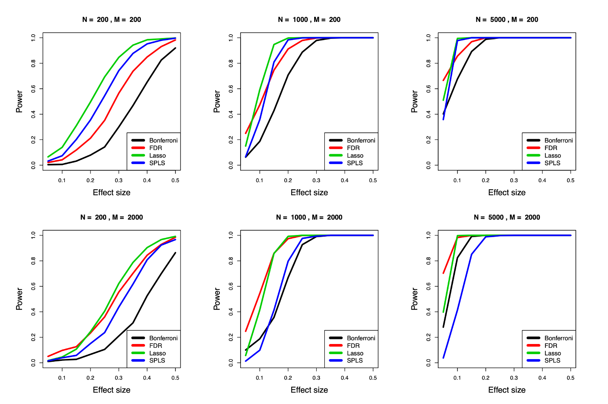
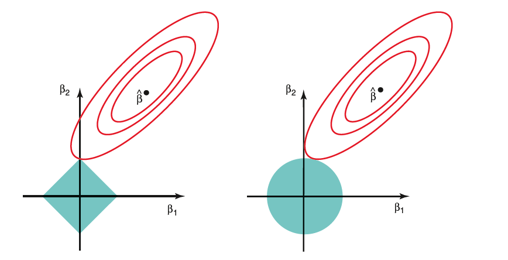
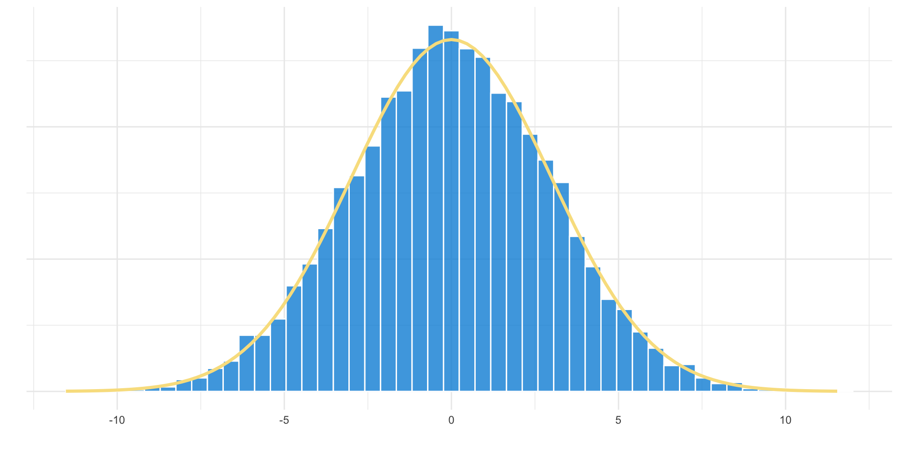
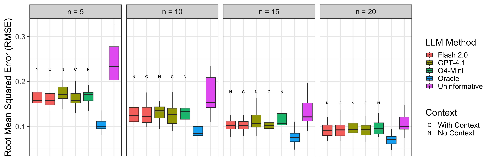

---
config:
theme: 'base'
themeVariables:
fontFamily: NewComputerModernSans10
primaryColor: '#F8E08E'
secondaryColor: '#0190DB'
---
graph LR;
A[Full Dataset] --> B[Subsample Data]
A --> C[Calculate true lnFC]
B --> D[Fit Models]
E[Uninformative Priors] --> D
F[LLM Priors] --> D
G[HMDB + LLM Priors] --> D
D --> H[Compare model estimates]
C --> H
H --> I((("Calculate Performance (Correlation and RMSE)")))
classDef prior fill:white;
class E,F,G prior;
Automated Prior Elicitation for Bayesian Metabolomics Analysis
JSM 2025 | Flexible Prior Elicitation for Bayesian Analysis
Chiraag Gohel
The Rahnavard Lab, The George Washington University
2025-08-06
Introduction
What is metabolomics?

From Human Metabolome Technologies
Effect Size Drives Biological Insight
Univariate testing may lack power

- Peluso et al. 2021: “…the complex non-normal structure of metabolic profiles and outcomes may bias the permutation results leading to overly conservative threshold estimates…”
- Henglin et al. 2022: “We observed that when the number of metabolites was similar to or exceeded the number of study subjects, as is common with nontargeted metabolomics performed in small cohorts, sparse multivariate models demonstrated the most consistent results and the most statistical power.”
What to do
- High dimensionality (\(p >> n\))
- Can lean on assumptions of sparsity
- Prior knowledge from previous studies, literature, and curated databases


Prior Work
- Current work is inspired from the LLM-Lasso1

Simulation Study
Empirical Monte-Carlo Subsampling
Experimental Design
Ground Truth: Empirical natural log fold change (lnFC) from full MTBLS1 dataset (n=132)
\(\beta_j^{\text{true}} = \log\left(\frac{\bar{y}_j^{\text{case}}}{\bar{y}_j^{\text{control}}}\right)\)
Evaluation: Subsampled data (n=10-40) with cross-validation
Modeling
All Bayesian models use the same log-link GLM structure with different prior specifications:
\[\begin{align} y_{ij} &\sim \mathcal{N}(\mu_{ij}, \sigma_j^2) \\ \log(\mu_{ij}) &= \alpha_j + \beta_j \cdot x_i \\ \alpha_j &\sim \mathcal{N}(\log(\bar{y}_j), 1.0) \\ \sigma_j &\sim \text{HalfNormal}(0.5) \end{align}\]
where \(y_{ij}\) is abundance for sample \(i\) and metabolite \(j\), \(x_i \in \{0,1\}\) is group indicator, and \(\beta_j\) represents the natural log fold change (lnFC) for metabolite \(j\).
Simulation Study
LLM Prior Elicitation Process
Step 1: LLM analyzes metabolite + study context \(\text{LLM}(\text{metabolite}, \text{condition}) \rightarrow \{d_j, m_j, c_j, r_j\}\)
Step 2: Map qualitative predictions to numerical priors \(\{d_j, m_j, c_j\} \xrightarrow{\text{mapping}} \{\mu_j^{\text{LLM}}, \sigma_j^{\text{LLM}}\}\)
Step 3: Use as informative priors in Bayesian model \(\beta_j \sim \mathcal{N}(\mu_j^{\text{LLM}}, \sigma_j^{\text{LLM}})\)
Simulation Study
Magnitude-Based Prior Mapping
Magnitude drives effect size, Confidence drives uncertainty. Effect sizes (\(m_j\)) are on the natural log scale.
Conservative Mapping
\[\begin{align*} \mu_j^{\text{LLM}} &= m_j \cdot \text{sign}(d_j) \\ \sigma_j^{\text{LLM}} &= f(c_j) \end{align*}\]
Moderate Mapping
\[\begin{align*} \mu_j^{\text{LLM}} &= m_j \cdot \text{sign}(d_j) \\ \sigma_j^{\text{LLM}} &= f(c_j) \end{align*}\]
where \(c_j\) is LLM confidence, \(d_j \in \{\text{increase, decrease, unchanged}\}\) is predicted direction, and \(m_j\) is predicted magnitude.
Priors
Oracle Prior (Upper Bound)
\[\beta_j \sim \mathcal{N}(\beta_j^{\text{true}}, 0.25)\]
Weakly Informative Prior
\[\beta_j \sim \mathcal{N}(0, 2)\]
LLM-Informed Hierarchical Prior
Group metabolites by LLM predictions and use intelligent pooling:
\[\begin{align*} \text{Group means}_g &\sim \mathcal{N}\bigl(\mu_g^{\mathrm{LLM}}, 3.0\bigr) \\ \beta_j &\sim \mathcal{N}\bigl(\text{Group means}_{g[j]}, 2.0\bigr) \end{align*}\]
where group \(g\) is mapped to \(\mu_g^{\mathrm{LLM}}\) as follows:
\[\begin{align*} \mu_g^{\mathrm{LLM}} = \begin{cases} -0.1, & \text{if }g = \text{decrease},\\ 0.0, & \text{if }g = \text{unchanged},\\ +0.1, & \text{if }g = \text{increase}. \end{cases} \end{align*}\]
Experimental Design
Ground Truth: Empirical natural log fold change (lnFC) from full MTBLS1 dataset (n=132)
\(\beta_j^{\text{true}} = \log\left(\frac{\bar{y}_j^{\text{case}}}{\bar{y}_j^{\text{control}}}\right)\)
Evaluation: Subsampled data (n=10-40) with cross-validation
- Oracle provides theoretical upper bound (perfect biological knowledge)
- LLM methods test practical biological knowledge integration
- Classical methods provide statistical baselines
Comparing three different models
Weak Prior

LLM Prior w/no context
graph TD;
A[Metabolite] --> C[LLM]
B[Study Context] --> C
LLM Prior w/HMDB context
How well can we recover the truth?
To test the effectiveness of LLM-generated priors, we designed a simulation study.
Goal: Recover “ground truth” effect sizes from a small dataset.
Dataset: MTBLS1 (Type 2 Diabetes)
“Ground Truth”: Natural log fold changes (lnFC) from the full dataset.
Models Compared:
Overview
For each dataset:
---
config:
theme: 'base'
themeVariables:
fontFamily: Avenir Next
primaryColor: '#F8E08E'
secondaryColor: '#0190DB'
---
graph LR;
A[Full Dataset] --> B[Subsample Data]
A --> C[Calculate lnFC]
B --> D[Fit Models]
E[Uninformative Priors] --> D
F[LLM Priors] --> D
G[HMDB + LLM Priors] --> D
D --> H[Compare model estimates]
C --> H
H --> I((("Calculate Performance (Correlation and RMSE)")))
classDef prior fill:white;
class E,F,G prior;
LLM-informed priors improve recovery
Key Findings
Conclusion
Summary